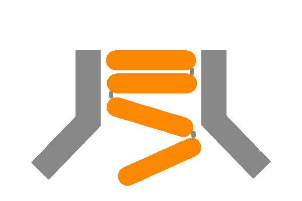

|

|
Stack UnderflowBlockchain powered code help Stack Underflow is a blockchain powered code forum. For so long many people have been dependant on large coorporations running servers and databases for forums to exeist. But with stack underflow blockchain allows the everyday person to host their own server and have it connected to the entire chain of servers to get high quality code help fast. |
Tell me about Stack Undeflow
What is stack overflow?
Stack Underflow is the result of Christopher Dean's work at Crimsonhacks 2018. It is a command line tool for getting help with code but can also act as a general forum.
What is Blockchain?
Blockchain is a relatively new technology used for large data storage. It is a distributed system with algorithms to sync updates between different servers and users. It also contains built in mechanisms to prevent changes to data and to verify the identity of those who post.
Why use Blockchain?
Blockchain provides the opportunity to get away from a traditional server database structure, opting for more distributed approaches
What did I learn?
This project was my first attempt at learning blockchain. Mainly it was just a hope that I would be able to successfully build a system that used blockchain.